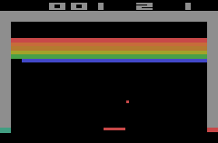

Cascade
- A mockup of a visual machine learning frame work
- Visually arrange a computational graph in the web-based frontend and perform computations on the backend (similar to Jupyter)
- A demo version lets you try it out without the backend - using pyodide to emulate python in javascript
- Arbitrary python code can be executed
- Many specific features are possible: Dynamic resource allocation, a history of training runs, smart hyperparameter management and more...
rnnbuilder
- Build models as a fixed computational graph in PyTorch in a way inspired by Keras
- No separate __init__ and forward definitions necessary. Short and comprehensible model definitions for complex and/or recurrent architectures
- Input sizes for each module as computed automatically based on the input shape to the network
- All hidden state of submodules in managed automatically
- Executes sequences of data in a batched fashion whenever possible and performs graph analysis to do so
pip install rnnbuilder


RL framework
- A mostly general Q-learning framework
- Multi-processing is used to parallelize data generation and training
- Different environments can be used in a format close to gym
- Recurrent networks are supported and their state is saved and dynamically updated in the replay buffer
- Data can be generated according to multiple actor policies (greedy, deterministic, etc.) and combinations are possible to formulate "training schedules"
- Frame stacking is supported
- Other modifications to standard Q-learning are possible